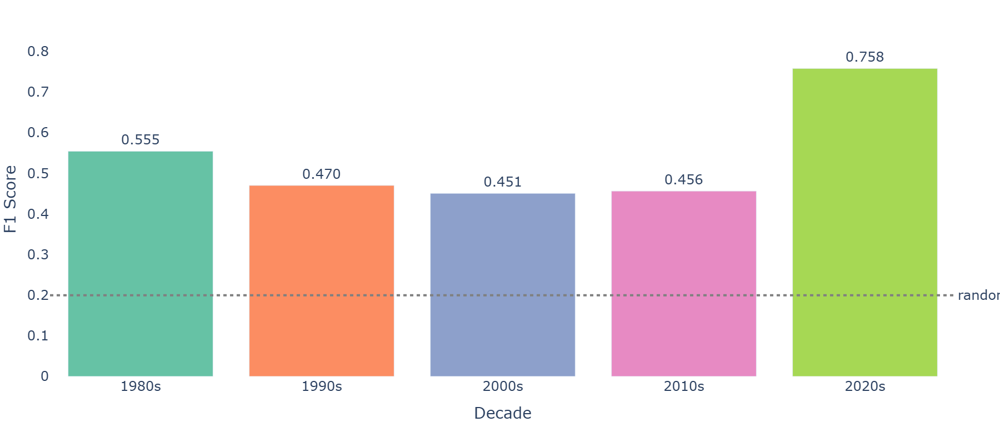
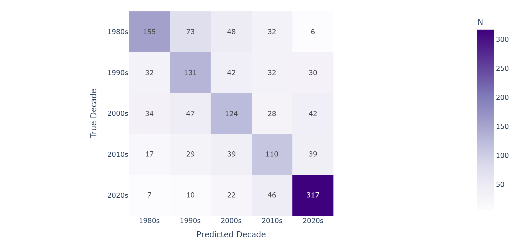
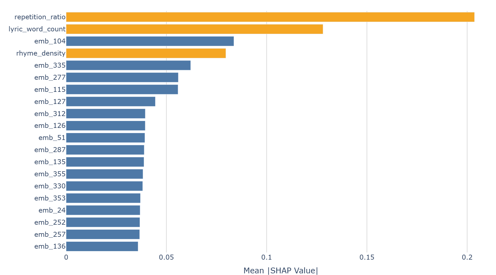
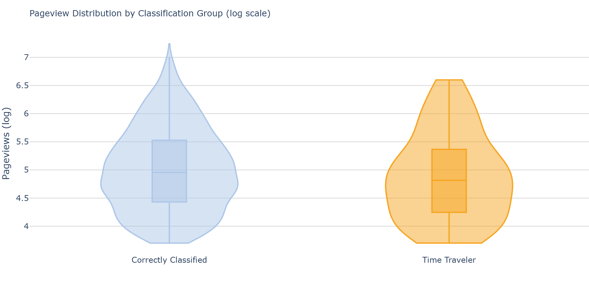
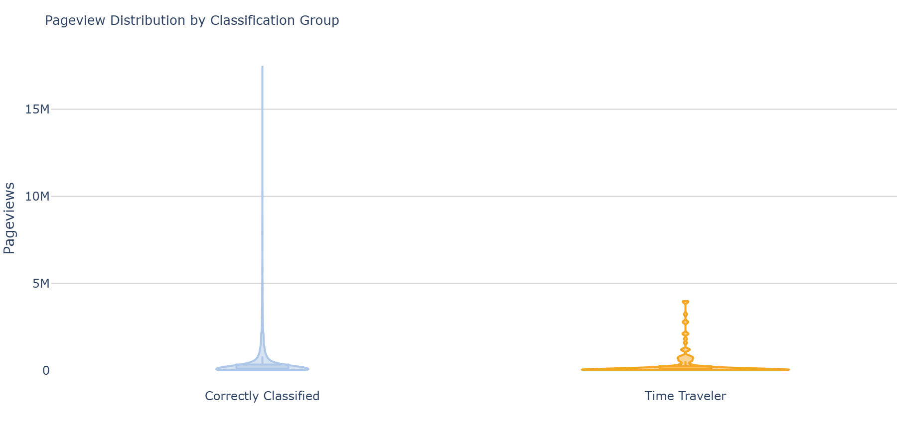

| Model | Val F1 (macro) | Accuracy | Precision (macro) | Recall (macro) | |
|---|---|---|---|---|---|
| 0 | Logistic Regression (PCA) | 0.448 | 0.458 | 0.446 | 0.452 |
| 1 | Logistic Regression (Full) | 0.449 | 0.457 | 0.448 | 0.452 |
| 2 | XGBoost (PCA) | 0.432 | 0.444 | 0.431 | 0.438 |
| 3 | XGBoost (Full) | 0.478 | 0.485 | 0.477 | 0.481 |
| 4 | Random Forest (PCA) | 0.405 | 0.425 | 0.409 | 0.419 |
| 5 | Random Forest (Full) | 0.437 | 0.454 | 0.440 | 0.448 |
Sonic Time Travelers: Can a Song’s Lyrics Place It in Its Era?
I. Introduction
Music, like fashion, appears to move in cycles. Some contemporary artists are frequently noted for their retro aesthetics despite releasing new material, and the marketing concept of “nostalgia sells” (promoting products that evoke emotional familiarity to drive consumer decisions) has become increasingly prominent in the music industry. This raises a natural question: is lyrical nostalgia statistically measurable, and does it correlate with commercial success?
This project approaches that question through the lens of computational text analysis. By treating song lyrics as the primary data source, we ask whether the words a song uses are enough to reliably identify the decade it came from, and whether modern songs that “sound old” lyrically actually attract more listener engagement.
Research Question
Can a song’s lyrical identity reliably place it in its era, and do modern songs whose lyrics read as vintage actually perform better commercially?
Hypotheses
Primary Hypothesis: Lyrical embeddings carry meaningful decade signal and a classifier trained on them will perform above chance. However, adjacent decades, particularly the 1990s–2000s and 2010s–2020s transitions will be systematically confused due to shared vocabulary and gradual thematic evolution.
Secondary Hypothesis: Modern songs from the 2010s and 2020s that are misclassified as belonging to the 1980s or 1990s will attract more listener engagement than correctly classified modern songs, supporting a “nostalgia sells” theory.
Novelty
Most existing work using music data relies on static Kaggle datasets and focuses on audio features alone, ignoring the lyrical dimension entirely. This project is distinctive in several ways. All data is collected live through API calls rather than downloaded as a pre-assembled dataset, giving full control over sampling strategy and decade balance. Multiple data sources such as Spotify, Genius, andMusicBrainz are integrated into a unified analysis pipeline. Finally, the secondary hypothesis directly operationalizes the nostalgia sells concept using listener engagement as a measurable outcome.
II. Methods
Data Sources and Acquisition
Data collection draws from three external sources, each serving a distinct role in the analysis.
Spotify Web API provides track metadata and decade labeling. Tracks are retrieved using decade-specific search queries combining release year ranges with genre keywords (e.g., rock year:1980-1989). To ensure genre diversity within each decade, four genre branches are sampled per era: Rock, Pop, and Hip Hop are included consistently across all five decades given their sustained cultural presence, while decade-specific genres like Dance (1980s), RnB (1990s), Country (2000s), EDM (2010s), and Latin (2020s) capture the unique sonic flavors of each era. Due to Spotify’s API rate limits under development mode, collection was spread across multiple days in batches of up to 1,000 tracks per query.
Genius API and web scraping provide raw song lyrics. For each track, the Genius search API is queried with the cleaned artist name and track title to retrieve the lyrics page URL, after which BeautifulSoup scrapes the page content. Track names are pre-cleaned by stripping parenthetical annotations such as “(Remastered)” or “(feat. Artist)” to improve search accuracy. Lyrics are cleaned by removing section headers (e.g., [Verse 1]), non-ASCII characters, and excess whitespace. Songs returning fewer than 20 words after cleaning are treated as failed scrapes. Genius page view counts are also fetched for each successfully scraped song as a proxy for listener engagement. A checkpoint is saved every 500 tracks to make the pipeline fully resumable.
MusicBrainz API supplements Spotify metadata with cultural context, including each artist’s country and city of origin and community-contributed genre tags. Artist records are retrieved by name search, then enriched with a detailed tag fetch. MusicBrainz enforces a strict rate limit of one request per second, which is respected via a fixed 1.1-second sleep between calls. A match confidence score is retained for each result to filter low-quality matches.
Data Cleaning and Labeling
All raw data sources are cleaned and aligned in a single consolidated step after collection is complete. Release years are extracted from Spotify’s release date field and records outside the 1980-2026 range are removed. Tracks identified as remasters, live versions, remixes, or deluxe editions via regex are filtered out. Deduplication retains only the earliest known release per artist and track name pair to preserve each song’s true era of origin. Decade labels are then assigned by binning release years into five categories (1980s through 2020s). A stratified cap of 2,000 songs per decade is applied to correct for overrepresentation of certain eras in the raw data.
Lyrics, embeddings, MusicBrainz enrichment, and pageview counts are merged against the cleaned Spotify track list using track ID and artist ID. Tracks that failed MusicBrainz matching are retained with null fields rather than dropped, since artist origin is a supplementary rather than required feature. The final master dataset retains only tracks for which lyrical embeddings were successfully generated.
| Stage | N Tracks |
|---|---|
| Raw collected | 15,147 |
| After remaster/live filter | 13,721 |
| After deduplication | 12,983 |
| After stratified cap | 9,854 |
| Master dataset (with embeddings) | 9,176 |
| Decade | Before Cap | After Cap |
|---|---|---|
| 1980s | 2,542 | 2,000 |
| 1990s | 3,137 | 2,000 |
| 2000s | 3,064 | 2,000 |
| 2010s | 1,854 | 1,854 |
| 2020s | 2,386 | 2,000 |
The 2010s are the only decade that did not reach the 2,000-track cap, retaining all 1,854 collected tracks. Embedding coverage, the share of the cleaned audio dataset for which lyrics were successfully scraped and embedded, is 93.1%.
Feature Engineering
Each song is represented as a 389-dimensional feature vector combining a 384-dimensional semantic embedding with five engineered features.
Lyrical embeddings are generated using the all-MiniLM-L6-v2 sentence transformer model, which maps each song’s full lyric text to a fixed-length dense vector capturing semantic meaning. This allows the model to compare songs in a continuous embedding space regardless of surface vocabulary differences.
Sentiment is computed using the VADER lexicon, producing a compound polarity score ranging from -1 (most negative) to +1 (most positive). VADER is well-suited for song lyrics as it was designed for informal expressive text and is sensitive to capitalization, punctuation, and intensifiers.
Rhyme density measures the proportion of line endings that share a phonetic rhyme sound with at least one other line in the song. Rhyme signatures are derived using the CMU Pronouncing Dictionary via the pronouncing library, where the last two phonemes of each line-ending word serve as the rhyme fingerprint.
Repetition ratio captures the proportion of lyric lines that are exact duplicates of another line within the same song, designed to quantify hook-driven or chorus-heavy song structures that became dominant in the streaming era.
Language is detected using the langdetect library and binarized into an is_english flag. This is included because non-English songs which are disproportionately represented in the 2020s due to Latin music sampling may be encoded differently by an English-dominant embedding model, and the flag allows the classifier to treat language as an explicit rather than latent signal.
Models and Training
The classification task predicts the decade label (five classes: 1980s through 2020s) from the 389-dimensional feature vector. The dataset is split 70/15/15 into training, validation, and test sets using an artist-stratified assignment strategy: all songs by a given artist are assigned to the same split, preventing the model from exploiting artist-specific stylistic signatures rather than genuine era characteristics.
Six model configurations are evaluated across three model families and two feature spaces:
- Logistic Regression serves as the interpretable baseline, trained in multinomial mode with L2 regularization.
- XGBoost is a gradient-boosted tree ensemble expected to capture non-linear interactions in the embedding space. Hyperparameters are selected via 5-fold cross-validated grid search over the training set, searching across number of estimators (200, 400, 600), max depth (3, 4, 6), learning rate (0.05, 0.1), and min child weight (1, 3). Accuracy is used as the grid search scoring metric given the balanced class distribution.
- Random Forest is a bagged tree ensemble trained with the best hyperparameters found by a separate grid search over number of estimators, max depth, max features, and min samples split.
Each model family is trained in two configurations: on PCA-reduced features (retaining 95% of variance, yielding 229 principal components) and on the full 389-dimensional scaled feature space. A single StandardScaler is fit on the training set only to prevent data leakage.
Model selection is based on macro-averaged F1 score on the validation set, chosen as the primary metric because it treats all five decade classes equally regardless of support size. The best-performing model on validation is then evaluated once on the held-out test set to produce final reported performance figures.
III. Results
Model Selection
Six configurations are compared on the validation set to select the final model. Table 3 summarizes the metrics for all configurations.
All models substantially outperform the random-chance baseline of 0.20. XGBoost trained on the full 389-dimensional feature space achieves the highest validation F1, consistent with gradient-boosted trees’ ability to perform implicit feature selection. Logistic regression performs competitively despite its simplicity, suggesting that a meaningful share of decade information is encoded in linearly separable directions within the embedding space. Based on these results, XGBoost (Full) is selected as the final model for test set evaluation and interpretation.
Final Model Performance
The selected model is evaluated once on the held-out test set. Table 4 shows per-class precision, recall, and F1, and Figure 1 visualizes the per-class F1 scores.
| Precision | Recall | F1 | Support | |
|---|---|---|---|---|
| Decade | ||||
| 1980s | 0.633 | 0.494 | 0.555 | 314 |
| 1990s | 0.452 | 0.491 | 0.470 | 267 |
| 2000s | 0.451 | 0.451 | 0.451 | 275 |
| 2010s | 0.444 | 0.470 | 0.456 | 234 |
| 2020s | 0.730 | 0.789 | 0.758 | 402 |
| macro avg | 0.542 | 0.539 | 0.538 | 1492 |
| weighted avg | 0.563 | 0.561 | 0.560 | 1492 |

The 1980s and 2020s are the most reliably classified decades, while the 1990s and 2000s show the lowest F1 scores. This is consistent with the primary hypothesis that adjacent decades share more lyrical vocabulary and are therefore harder to distinguish.
Confusion Patterns
Figure 2 shows the full confusion matrix on the test set.

The final test set confusion matrix reveals several striking patterns. The 2020s dominates with 317 correct predictions out of 402 songs (79% recall), by far the highest of any decade. This confirms that contemporary lyrical style is the most distinctive era in the corpus, likely driven by the combination of modern slang, Latin influence, and streaming-optimized song structures. The 1980s follows with 155 correct (49% recall), benefiting from its distinctive rock and dance-era vocabulary. The middle decades are substantially harder: the 2000s achieves only 124 correct (45% recall) and the 2010s only 110 (46% recall), with the 1990s sitting at 131 (52% recall).
The off-diagonal tells an equally interesting story. The 1990s bleeds heavily into the 2020s (30 songs predicted as 2020s), which is unexpected for non-adjacent decades and may reflect the growing trend of 90s revival aesthetics in modern music. The 2000s similarly leaks into the 2020s (42 songs), suggesting that some early-2000s lyrical styles have more in common with contemporary music than with the 1990s. The 1980s–1990s boundary remains the most classically confused adjacent pair (73 songs from the 1980s predicted as 1990s), consistent with the gradual transition from classic rock to grunge and early hip hop. Notably, almost no songs from any decade are predicted as 1980s except true 1980s tracks, meaning the model treats the 1980s as a fairly exclusive category that is hard to fake.
Feature Importance
To understand which features most drive decade classification, SHAP values are computed on the XGBoost (Full) model over a sample of 500 test-set tracks. Figure 3 shows the top 20 features by mean absolute SHAP value.

Engineered features such as repetition_ratio, lyric_word_count, and rhyme_density rank among the top 20 overall features, appearing well above the majority of individual embedding dimensions. This confirms that the model leverages these interpretable structural properties rather than relying solely on semantic embedding coordinates. A notable pattern is the spike in repetition_ratio for the 2010s, consistent with the dominance of hook-driven, streaming-optimized song structures in that era.
The Nostalgia Sells Hypothesis
We define time travelers as songs released in the 2010s or 2020s that the model predicts as belonging to the 1980s or 1990s — songs whose lyrical identity reads as vintage despite their contemporary release date. Among the 1492 test-set songs, 63 (4.2%) are classified as time travelers. Interactive examples are available in the UMAP visualization on the Explore Data page.
To test the secondary hypothesis, we compare Genius pageview counts between time travelers and correctly classified modern songs across the full dataset of 2010s/2020s tracks with available pageview data.


The pageview distributions provide no support for the nostalgia sells hypothesis.
On the log scale, correctly classified modern songs have a visibly higher median (approximately 10^5, or 90,000 pageviews) compared to time travelers (approximately 10^4.8, or 65,000 pageviews), and the correctly classified group extends further into the upper tail, reaching past 10^7 while time travelers cap around 10^6.5.
The raw scale plot makes the extreme skew even more apparent: the correctly classified group contains songs with upwards of 17 million Genius pageviews while time travelers max out around 4 million. The vast majority of songs in both groups cluster near zero regardless of scale, confirming that a small number of viral outliers dominate the mean. Even on the median, time travelers do not outperform correctly classified songs. If a nostalgia sells effect exists in popular music, it is not detectable through Genius pageviews in this corpus, and the evidence leans in the opposite direction: the highest-engagement modern songs tend to be those that sound distinctly contemporary rather than vintage.
It is worth noting that Genius pageviews are a narrow proxy for commercial success. Listener engagement in the modern era is more naturally measured through streaming platform play counts, YouTube views, TikTok usage, or social media virality. A song can accumulate enormous streaming numbers without ever driving significant lyric-lookup traffic on Genius, and conversely, a lyrically complex or nostalgic song may attract disproportionate Genius visits precisely because listeners want to parse its words rather than because it is commercially dominant. Hence, the absence of a nostalgia effect in this analysis should therefore be interpreted cautiously.
IV. Conclusions and Summary
Summary
This project investigated whether song lyrics carry sufficient temporal signal to reliably identify a song’s decade of origin, and whether modern songs with vintage lyrical identities attract more listener engagement.
On the first question, the answer is yes, but imperfectly. XGBoost trained on full lyrical embeddings augmented with engineered features achieves a macro-averaged F1 of 0.538 on the held-out test set, substantially above the 0.20 random-chance baseline. This confirms that lyrical language encodes meaningful temporal signal. However, classification degrades specifically at adjacent-decade boundaries, particularly the 1990s–2000s transition, supporting the hypothesis that lyrical evolution is gradual rather than discrete.
On the second question, the pageview analysis does not find significant evidence that time travelers attract greater engagement, leaving open the nostalgia sells theory in the lyrical domain.
Key Findings
Decade signal is real but subtle. Lyrical embeddings outperform chance by a wide margin, but overall accuracy remains moderate, indicating that lyrics are a noisy but informative temporal cue.
Adjacent decades are the hardest to distinguish. The 1990s-2000s transition is the most confusing boundary. The 1980s and 2020s are the most distinctive, likely due to their particularly characteristic vocabularies (i.e., rock and dance-era terminology in the 1980s and contemporary slang and Latin influence in the 2020s).
XGBoost is the best model. The full-embedding XGBoost matches or outperforms the PCA-reduced variant, consistent with gradient-boosted trees’ ability to perform implicit feature selection without explicit dimensionality reduction.
Engineered features add value. Rhyme density and repetition ratio rank among the top overall SHAP features, confirming that structural lyrical properties carry complementary decade signal beyond what the dense semantic embedding alone captures.
Limitations
Survivor bias. Older decades are represented only by tracks visible enough to surface in Spotify search results, likely overrepresenting canonical songs and underestimating lyrical diversity within each era.
Uneven lyrics coverage. Genius skews toward contemporary music; the 1980s have a lower lyrics match rate, which may disadvantage the classifier when predicting that decade.
Genre composition confounds decade. Genre clusters more strongly than decade in the embedding space. Because genre distributions shift across decades (e.g., EDM in the 2010s, Latin in the 2020s), the classifier may be partially learning genre rather than pure lyrical era identity.
Language sensitivity. Spanish-language tracks, most prevalent in the 2020s Latin sampling, may be encoded differently by an English-dominant embedding model. The
is_englishbinary flag partially controls for this but does not fully address it.Genius pageviews as engagement proxy. Pageview counts reflect lyric-lookup behavior more than streaming popularity. Songs that are lyrically interesting or confusing may attract disproportionate Genius traffic regardless of commercial success, introducing noise into the nostalgia sells analysis.